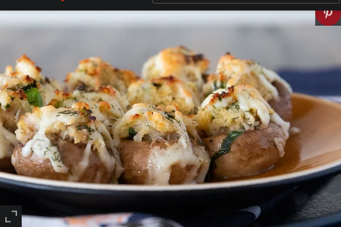

Crab Stuffed Mushrooms

These little goodies are the perfect addition to your next holiday gathering or even the perfect appetizer to serve before a cozy dinner at home. Everyone will be dazzled by every delicious bite (they won't be able to keep their hands off of them!) You can smile while you think of how easy they were to toss together! And the best part - I usually end up with leftover stuffing, which freezes beautifully until the next carry-in!
Ingredients:
2 tablespoons minced green onion
1 cup cooked crabmeat, finely chopped
¼ cup shredded Monterey Jack cheese
½ teaspoon dried dill weed
1 1/2 pounds fresh button mushrooms, stems removed
½ cup shredded Monterey Jack cheese
Steps:
Step 1.
Preheat oven to 400 degrees F (200 degrees C).
Step 2.
Melt 2 tablespoons butter in a skillet; cook and stir green onion until softened, about 2 minutes. Transfer green onion to a bowl. Stir in crabmeat, bread crumbs, 1/4 cup Monterey Jack cheese, egg, lemon juice, and dill weed until well mixed.
Step 3.
Pour 1/2 cup melted butter in a 9x13-inch baking dish; turn mushroom caps in butter to coat. Fill mushroom caps with the crab mixture and sprinkle with remaining 1/2 cup Monterey Jack cheese. Pour white wine into baking dish.
Step 4.
Bake in preheated oven until cheese is melted and lightly brown, 15 to 20 minutes.
Programmer's Note: This recipe is not mine. This recipe is a recreation of the recipe provided at this page and serves only as practice text for personal programming purposes.